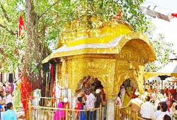
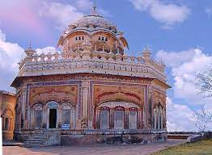
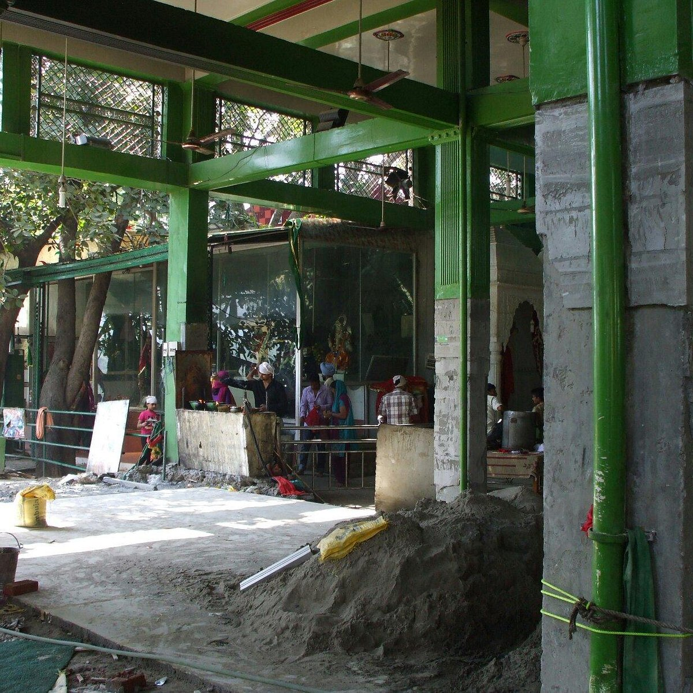
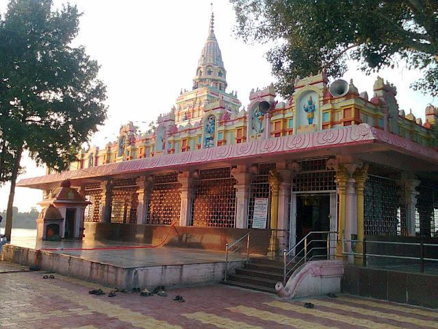
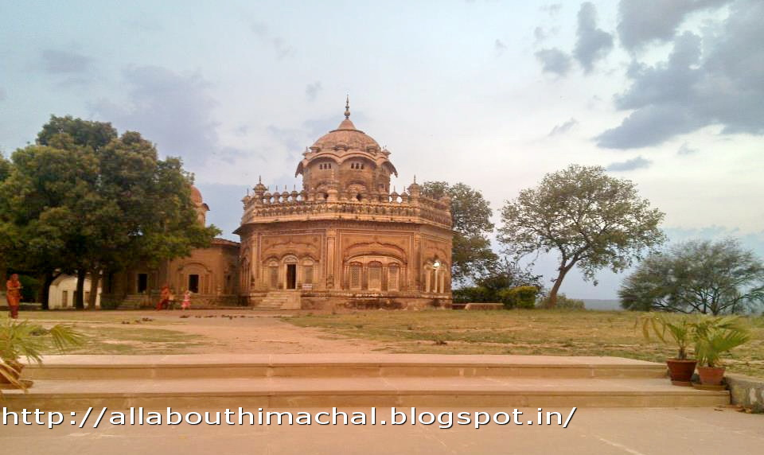

UNA:
At an elevation of 1210 feet, the hottest district in the state, Una, is referred to as the Gateway to Himalayas. The land seems an exception in Himachal Pradesh, where most of the cities are in the hilly region. If you intend to visit the place in summer, you need to have cotton clothes to make your stay comfortable. Here are the destinations in Una.
Fair and Festivel in Una :
1. Chintpurni:
2.Gurudwara of Sahib Sigh Ji Bedi:
3.Pir Nigaha:
4.Panjgatra:
5.Baisakhi and Holi:
At an elevation of 1210 feet, the hottest district in the state, Una, is referred to as the Gateway to Himalayas. The land seems an exception in Himachal Pradesh, where most of the cities are in the hilly region. If you intend to visit the place in summer, you need to have cotton clothes to make your stay comfortable. Here are the destinations in Una.

Fair and Festivel in Una :
1. Chintpurni:
- The shrine of Chintpurni is located 3 kms. away from a place known as Bharwain on Hoshiarpur–Dharamshala road on ridge top of Solashinghi range.
- At Chintpurni three famous fairs are held every year, first is known as the Chaitra Navratras fair in the month of March-April, second as Shravan Ashtmi fair in the month of August and the third one known as Kartik Navratras fair in the month of August.
- Shravan Ashtmi fair is the main fair among the three where lacks of devotees come from different parts of the country and abroad to pay their homage.

2.Gurudwara of Sahib Sigh Ji Bedi:
- The Gurudwara is situated in Una town within the precinct of Una fort and was founded by the descendant of Baba Guru Nanak Dev Ji.
- According to the District Gazetteer of Hoshiarpur (1884) Bedi Baba Kaladhari, a descendant of Baba Nanak, crossed over from Dera Baba Nanak (Gurdaspur), early in the 19th centuary and after wandering in the Jalandhar Doaba area for years, ultimately settled down at Una where he laid foundation of Una town.
- Here he attracted huge crowd of followers who flocked to hear his eloquent disquisition on the Granth Sahib. In Samvat 1860 (1804 A.D.)
- Raja Umed Singh gave to Baba Sahib Singh Ji Bedi, the whole of the Una Taluk (177 villages) as Jagir which was confirmed by Maharaja Ranjit Singh in Samvat 1872 and about the same time he received Nurpur Taluka from Sardar Budha Singh.
- Thus the principality of Bedi’s of Una went flourishing and expanding till it was taken over by the British.
- Even Now the descendants of Baba Kaladhari live in the fort of Una. Every year in the month of February/March a fair is held here to commemorate the Baba Kaladhari.

3.Pir Nigaha:
- This shrine is situated in Basoli about 8 kms. from Una.
- This is said to be the handi-work of ‘Pandavas’ but later appropriated by Muslims.
- A fair is also held every thursday in May/June.
- It is believed that the cattle are brought over here to get secured of the diseases.
- People assemble in large numbers.

4.Panjgatra:
- Panjgatra at Babhaur on the bank of Satuj is held on first Baisakhi day.
- It is purely a religious festival.
- The people gather and take bath in the river Satluj.
- The name is from five stones said to have been used by the sons of the Pandavas in the game of Panch Satara.

5.Baisakhi and Holi:
- The fair at Mairi near Amb is held on Holi, where large number of people use to assemble.
- Principally people from Doaba and Manjha-Malwa assemble here and offer prayers to Dera Baba Barbhag Singh.
- Another fair is held on the day of Baisakhi, which is attended mostly by people from Kangra district.
- Yet another fair in Thakurdwara of Dharamsala is held on the day of Baisakhi and Holi.
